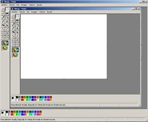
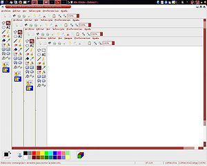
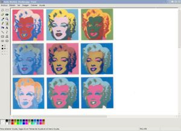

Paint
 De: La Frikipedia, la enciclopedia extremadamente seria.
De: La Frikipedia, la enciclopedia extremadamente seria.
| De la serie programar es fácil:
|
| Paint
|
| 
|
| Impresión de pantalla del Paint, en plena edición de una impresión de pantalla del Paint, creada con el Paint y modificada posteriormente con Photoshop para poder reducir su tamaño y resolución.
|
|
| Desarrollador
|
Hasecorp
|
| Licencia
|
Viene con la PC (Lo pagas con lo que te costó la PC)
|
| Botones
|
Todos los que ves arrriba
|
| Última versión
|
Windows 95
|
| ¿Funciona?
|
Si
|
| ¿Tiene Virus?
|
Si
|
Potente herramienta, creada por Hasecorp al al principio de los tiempos, poco después de la invención de la electrónica, para las creación, modificación y, sobre todo, borrado de imágenes. Se usa principalmente en estudios de arquitectura por ser ideal para crear imágenes 3D a partir de una simple planta, que puede ser introducida en el Paint metiendo su dibujo en la disquetera. Pero sin duda, el triunfo total para este software, lo que le ha permitido perdurar a lo largo de los años, es su fácil accesibilidad. Sólo hay que ir a Inicio/aplicaciones.
Con el paso de los años, Paint ha ido evolucionado de forma alarmante. Ha pasado de de ser una simple herramienta para modificar ficheros .bmp, a poder convertir un fichero .bmp a .jpg.
Funcionalidades
La cantidad de funcionalidades que ofrece el Paint es infinita, pero a continuación comentaremos las más características:
 Sucedáneo malo
Linuxero, a pesar de que puede manejar transparencia
- Amplia gama de colores: Que va desde el Negro hasta el Blanco, pasando por el Gris oscuro, Gris clarito, Rojo oscuro, Rojo clarito, Amarillo oscuro, Amarillo clarito, Verde oscuro, Verde clarito, Azul Verdoso oscuro, Azul Verdoso clarito, Azul Oscuro oscuro, Azul Oscuro clarito, Rosa oscuro, Rosa clarito, Amarillos oscuro, Amarillo clarito, Verde claro oscuro, Verde Claro clarito, Azul Claro oscuro, Azul Claro clarito, Morado oscuro, Morado clarito, Azul amoratado, Rojo arrosado, Naranja oscuro y Naranja clarito. Algunos dicen que se pueden hacer colores modificados, pero es sólo una leyenda.
- No desplazamiento automático de la pantalla: Gracias a la cual no corremos el riesgo de seleccionar más allá de lo que podemos ver en la pantalla. Actualmente los desarrolladores trabajan para luchar contra las ruedas de ratón, porque permiten seleccionar toda la parte inferior, por grande que sea la imagen.
- Potente zoom: Con el que podemos las imágenes grandes o las imágenes normales o incluso en un tamaño personalizado (Podemos elegir entre 100%, 200%, 400%, 600% y 800%). Todo lo que se salga de aquí, no hace más que consumir recursos tan necesarios para que el SO pueda trabajar.
- Mensajes de ayuda dinámicos que aparecen según las necesidades: Estos son del tipo "Para obtener Ayuda, haga clic en Temas de ayuda en el menú Ayuda" o del tipo "Para obtener Ayuda, haga clic en Temas de ayuda en el menú Ayuda". Todo depende de la herramienta que estés usando en cada momento y de las acciones que intentes llevar a cabo. El más famoso de todos es: "Para obtener Ayuda, haga clic en Temas de ayuda en el menú Ayuda".
- Herramienta para invertir colores: Le das y "¡tachán!" se invierten los colores. Sirve para... mmm... bueno, no se para que sirve. Pero es increible que la informática pueda hacer esas cosas.
- Voltear o girar: Permite voltear o girar la imagen. Incluso por ángulos. Así puedes ponerla para un lado, para el otro lado, y lo que es más increible, ponerla boca abajo. A pesar de su sencillez y complejidaz se le podía llamar Paint No Aburrido.
- Hacer un foto montaje de ti con una chica (Por que sabes que no sucederá)
Nueva versiones
 Captura del PC de Warhol que prueba que el arte hoy día es un sin dios y un dislate.
Copypaste + Cubo de pintura = Arte
Ya se ha anunciado la próxima salida al mercado de la nueva versión de Paint, que se llamará "Paint Ceguera". Las principales diferencias serán:
- Dos nuevos colores para la tabla de colores principales: El Azul Fucsia y el Negro Luorecente.
- Una nueva opción para herramienta de borrado: Que permitirá seleccionar borrado con forma rectangular.
- Opción para ampliar el zoom al 101%: Eso
- Interfaz a lunares diseñada por Isabel Paintoja: Que permite además falsificar Bin Ladenes.
Requisitos minimos
- Sistema operativo: Windows 7 Ultimate
- Procesador: Intel Core 2 Quad 2.4Ghz, AMD Phenom X3 2.1Ghz
- Memoria RAM: 4GB
- Disco duro: 100 Gb de espacio libre.
- Tarjeta gráfica: 512MB NVIDIA 8600 / 512MB ATI 3870
Enlaces externos
Curiosidades
- Hay muchas personas que utilizan Paint para mostrar su habilidad con dibujo. Lo mas raro es que son todos dibujos Anime copiados de revistas.
- Andan muchos animales por la red que crean sobrenaturales obras en Paint.
- Nadie dibuja con el lapiz ni pinta con el pincel.
- Existe un ruso que si lo hace, podemos apreciar su magia en:http://www.youtube.com/user/Syberov
- Siempre hay algún vídeo donde un subnormal muestra "tricks" y no son mas que juegos con el Color Secundario de la goma.
- Siempre hay alguien que quiere imitar al dibujo de la Mona Lisa, cuando logran entender que ese dibujo se hizo con una tableta digital de ultima generación, y por un Diseñador Gráfico, que debe ser: Dibujante, Pintor, Falsificador, Escultor, Ilustrador, etc. Abandonan la idea.
- Siempre hay un vídeo de Paint con una canción de Evanescence.
 Informática Informática
|
Personajes Infames Famosos
Dispositivos de Almacenamiento
|
Autor(es):
- Nexo
- Doctor grijander
- Aque
- NRikee
- Dark temptation
- Sygma
- Dani deini9569
- Gñapero Solitario
- Gerri
- ADrIaN1996
Frikipedia 2005-2016, Licencia
GFDL 1.2 - Extraído por FrikiLeaks